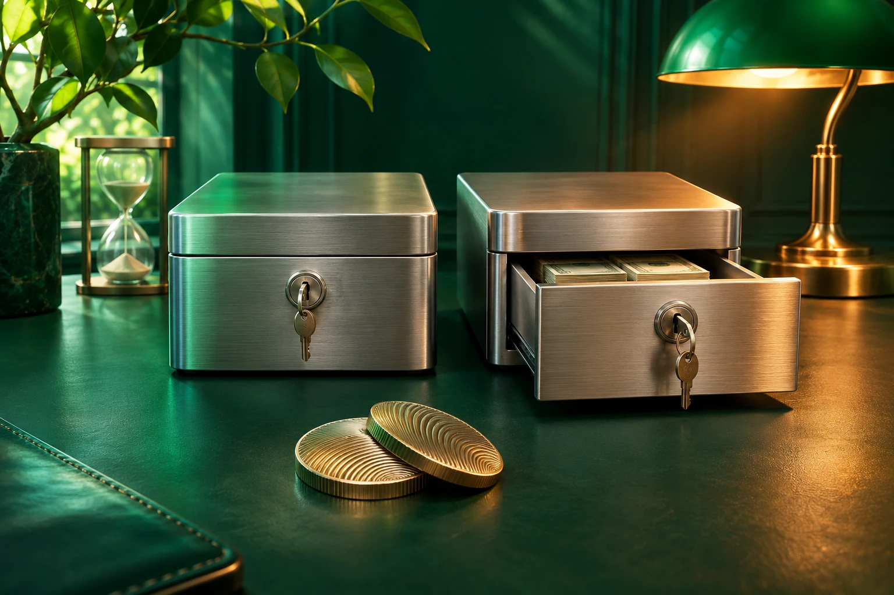

Что можно сравнить в каталоге вкладов
- депозита в выдаче на архивном экране
- 122
- признака для быстрого отбора вкладов
- 4
На сохранённом экране четыре быстрых фильтра. Можно отобрать вклады с досрочным расторжением, частичным снятием, капитализацией или пополнением. Частичное снятие и закрытие вклада показаны отдельно. Для человека, которому может понадобиться часть денег, это разные условия.
Архивный снимок из медиакита Bank.kz, июнь 2026 года.
Ставка и доступ к деньгам
В разделе депозитов можно начать с валюты и типа вклада. Так посетитель сужает список до предложений, которые подходят его задаче, и переходит к сравнению условий.


Как сравнить два вклада
Один из сценариев в каталоге — выбрать вклады в одной валюте и сопоставить ставку с условиями доступа к деньгам. Для посетителя, который может забрать часть средств раньше срока, эти условия влияют на выбор вместе со ставкой.
Продуктовый разбор
Помогают ли фильтры выбрать подходящий вклад

Чем отличается высокая ставка от подходящего вклада
Я бы сравнил две версии списка: текущую и ту, где условие частичного снятия стоит сразу под ставкой. В пользовательском тесте дал бы конкретную задачу: найти вклад в выбранной валюте, с которого можно снять часть денег раньше срока. Измерил бы долю участников, выбравших подходящий вклад, и время до выбора.
Как контролировать качество витрины
В рабочей воронке я бы считал, как часто после выбора валюты и типа вклада список пуст. Если это происходит регулярно, проверил бы полноту каталога и фильтры, прежде чем менять сортировку. Для предложений с заполненными условиями отдельно сверял бы актуальность ставки и правил снятия с данными банка.